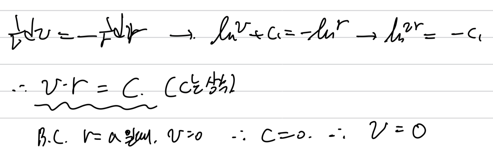
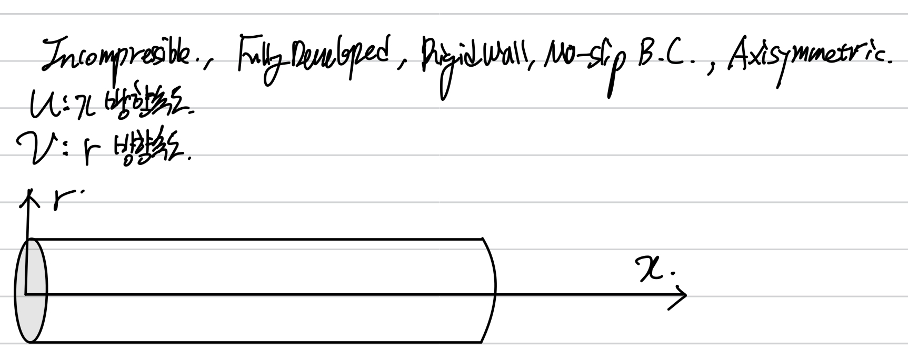
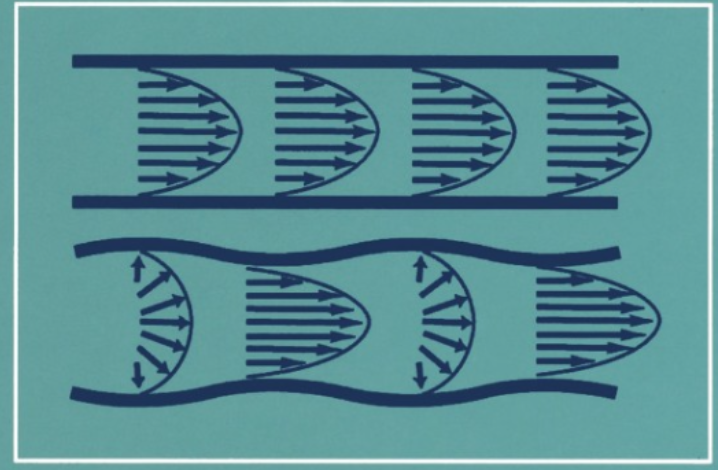
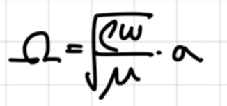
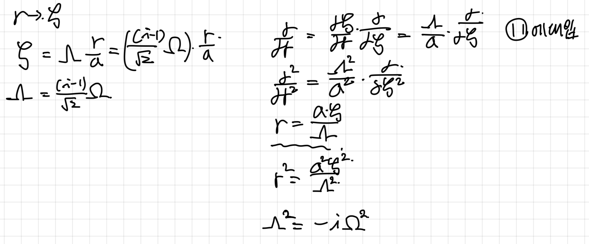

<!DOCTYPE html>
<html lang="ko" data-theme="light">
<head>
  <meta charset="utf-8">
  <meta name="viewport" content="width=device-width, initial-scale=1">
  <title>[Pulsatile flow] on a rigid tube _ 1. Velocity | Sehyeog Kim</title>
  <link rel="stylesheet" href="../../../../assets/css/style.css">
  <script>!function(){var t=localStorage.getItem("theme")||"light";document.documentElement.setAttribute("data-theme",t)}();</script>
</head>
<body>
  <button class="theme-toggle" aria-label="Toggle theme"><svg class="icon-sun" viewBox="0 0 24 24" fill="none" stroke="currentColor" stroke-width="2" stroke-linecap="round" stroke-linejoin="round"><circle cx="12" cy="12" r="5"/><line x1="12" y1="1" x2="12" y2="3"/><line x1="12" y1="21" x2="12" y2="23"/><line x1="4.22" y1="4.22" x2="5.64" y2="5.64"/><line x1="18.36" y1="18.36" x2="19.78" y2="19.78"/><line x1="1" y1="12" x2="3" y2="12"/><line x1="21" y1="12" x2="23" y2="12"/><line x1="4.22" y1="19.78" x2="5.64" y2="18.36"/><line x1="18.36" y1="5.64" x2="19.78" y2="4.22"/></svg><svg class="icon-moon" viewBox="0 0 24 24" fill="none" stroke="currentColor" stroke-width="2" stroke-linecap="round" stroke-linejoin="round"><path d="M21 12.79A9 9 0 1 1 11.21 3 7 7 0 0 0 21 12.79z"/></svg></button>

  <header class="mobile-header">
    <span class="site-title">Sehyeog Kim</span>
    <button class="menu-toggle" aria-label="Menu">&#9776;</button>
  </header>
  <div class="sidebar-overlay"></div>

  <div class="site-wrapper">
    <aside class="sidebar">
      <div class="sidebar-bg">
        
      </div>
      <div class="sidebar-profile">
        
        <h1 class="profile-name">Sehyeog Kim</h1>
        <p class="profile-bio">AI &amp; Computational Engineering<br>Personal Blog</p>
        <div class="profile-links">
          <a href="https://github.com/Sehyeogkim" target="_blank" rel="noopener">
            <svg viewBox="0 0 16 16" width="15" height="15" fill="currentColor"><path d="M8 0C3.58 0 0 3.58 0 8c0 3.54 2.29 6.53 5.47 7.59.4.07.55-.17.55-.38 0-.19-.01-.82-.01-1.49-2.01.37-2.53-.49-2.69-.94-.09-.23-.48-.94-.82-1.13-.28-.15-.68-.52-.01-.53.63-.01 1.08.58 1.23.82.72 1.21 1.87.87 2.33.66.07-.52.28-.87.51-1.07-1.78-.2-3.64-.89-3.64-3.95 0-.87.31-1.59.82-2.15-.08-.2-.36-1.02.08-2.12 0 0 .67-.21 2.2.82.64-.18 1.32-.27 2-.27.68 0 1.36.09 2 .27 1.53-1.04 2.2-.82 2.2-.82.44 1.1.16 1.92.08 2.12.51.56.82 1.27.82 2.15 0 3.07-1.87 3.75-3.65 3.95.29.25.54.73.54 1.48 0 1.07-.01 1.93-.01 2.2 0 .21.15.46.55.38A8.013 8.013 0 0016 8c0-4.42-3.58-8-8-8z"/></svg> GitHub
          </a>
        </div>
      </div>
      <nav class="sidebar-nav">
        <a href="/" class="nav-item nav-home">Home</a>
        <span class="nav-group-label">AI</span>
        <a href="/blog/ai/agentic-ai-theory/" class="nav-item">Agentic_AI_Theory<span class="nav-post-count">8</span></a>
        <a href="/blog/ai/deep-learning/" class="nav-item">Deep-learning<span class="nav-post-count">14</span></a>
        <a href="/blog/ai/machine-learning/" class="nav-item">Machine_Learning<span class="nav-post-count">11</span></a>
        <a href="/blog/ai/sensitivity-analysis/" class="nav-item">Sensitivity_Analysis<span class="nav-post-count">3</span></a>
        <span class="nav-group-label">BioMechanics</span>
        <a href="/blog/biomechanics/blood-flow-and-metabolism/" class="nav-item active">Blood-Flow-and-Metabolism<span class="nav-post-count">12</span></a>
        <a href="/blog/biomechanics/cardiovascular-diseases/" class="nav-item">CardioVascular_Diseases<span class="nav-post-count">8</span></a>
        <span class="nav-group-label">Mechanical_Engineering</span>
        <a href="/blog/mechanical-engineering/computational-linear-algebra/" class="nav-item">Computational-Linear-Algebra<span class="nav-post-count">15</span></a>
        <a href="/blog/mechanical-engineering/computational-fluid-dynamics/" class="nav-item">Computational_Fluid_Dynamics<span class="nav-post-count">14</span></a>
        <a href="/blog/mechanical-engineering/continuum-mechanics/" class="nav-item">Continuum-Mechanics<span class="nav-post-count">9</span></a>
        <a href="/blog/mechanical-engineering/engineering-mathematics/" class="nav-item">Engineering_Mathematics<span class="nav-post-count">14</span></a>
        <a href="/blog/mechanical-engineering/finite-element-method/" class="nav-item">Finite-Element-Method<span class="nav-post-count">1</span></a>
        <a href="/blog/mechanical-engineering/fluid-mechanics/" class="nav-item">Fluid_Mechanics<span class="nav-post-count">18</span></a>
        <a href="/blog/mechanical-engineering/gas-dynamics/" class="nav-item">Gas_Dynamics<span class="nav-post-count">24</span></a>
        <a href="/blog/mechanical-engineering/heat-transfer/" class="nav-item">Heat-transfer<span class="nav-post-count">8</span></a>
        <a href="/blog/mechanical-engineering/solid-mechanics/" class="nav-item">Solid_Mechanics<span class="nav-post-count">25</span></a>
        <a href="/blog/mechanical-engineering/thermodynamics/" class="nav-item">Thermodynamics<span class="nav-post-count">14</span></a>
        <a href="/blog/mechanical-engineering/viscous-flow/" class="nav-item">Viscous_Flow<span class="nav-post-count">28</span></a>
      </nav>
    </aside>

    <main class="main-content">
      <div class="breadcrumb"><a href="/">Home</a><span class="sep">/</span><a href="/blog/biomechanics/">BioMechanics</a><span class="sep">/</span><a href="/blog/biomechanics/blood-flow-and-metabolism/">Blood-Flow-and-Metabolism</a><span class="sep">/</span><span>[Pulsatile flow] on a rigid tube _ 1. Velocity</span></div>
<a href="/blog/biomechanics/blood-flow-and-metabolism/" class="back-link">&larr; Back to Blood-Flow-and-Metabolism</a>
<div class="page-header"><h1>[Pulsatile flow] on a rigid tube _ 1. Velocity</h1></div>
<div class="post-meta"><span class="meta-item"><span class="meta-label">Date:</span> 2024-09-29</span><span class="meta-item"><span class="meta-label">Category:</span> Blood-Flow-and-Metabolism</span><span class="meta-item"><span class="meta-label">Source:</span> <a href="https://jeffdissel.tistory.com/103" target="_blank" rel="noopener">link</a></span></div>
<article class="post-content"><p>[Prerequisite]<br />
1.Fluid dynamics<br />
(continutiy and momentum eq on a rigid tube)<br />
2. Bessel Function<br />
(First, and Second order Bessel function)<br />
Blood 를<br />
Fluid 관점에서 해석할 때,<br />
크게 2가지 특징이 존재한다.<br />
1. Non-Newtonian characteristic<br />
2. 심장의 주기적인 박동 flow<br />
- Pulsatile Flow.<br />
first 특성은, 블로그의<br />
https://jeffdissel.tistory.com/85<br />
Blood Viscosity<br />
blood 는 다음 4가지로 구성 되어 있다. Components of Blood-Red blood cells-White blood cells-Platelets-Extracellular fluid(Plasma) 여기서, viscosity을 결정하는 요소는 바로Red blood cells들의 함유량으로 결정된다.He<br />
jeffdissel.tistory.com<br />
blood viscosity 부분에서 다루었고,<br />
지금부터 두번째<br />
Pulsatile Flow 에 대해서 알아보자.<br />
<br />
1cycle동안 대동맥 압력 변화그래프.<br />
참고할 책은<br />
<br />
그중에 ch3,4,5를 다룰 것이고<br />
Ch5 Steady Flow in a tube<br />
Ch4 Pulsatile Flow in a Rigid Tube<br />
Ch5 Pulsatile Flow in an Elastic Tube<br />
를 먼저 다루어 보자.</p>
<hr />
<p>지금부터, rigid tube에서 유체가 흐르는 경우를 살펴보겠다.<br />
Fluid mechanics시간에 증명하였던,<br />
Naviers Stokes Eq<br />
Continuity Eq.<br />
(x,y,z) -&gt; (r,<br />
θ<br />
,z) cylindrical coordinate.<br />
로 전환시켜준다.<br />
<br />
먼저 Continuity Eq<br />
<br />
<br />
<br />
<br />
여기에 밀도 변화거 없는 incompressible flow 가정을 더해주자.<br />
<br />
자 여기까지, 원통형 incompressible flow continuity Eq이다.<br />
여기서 두가지 가정을 추가로,<br />
Naviers Stokes eq도<br />
간단하게 해주자.<br />
<br />
여기서, 1번 연속방정식을 정리후,<br />
적분해주고,<br />
No-slip boundary condition<br />
on the wall을 적용해주자.(벽에서 속도 = 0)<br />
그렇다면, C = 0, V = 0 이 도출 된다.<br />
즉, Radius direction 속도 = 0<br />
<br />
이후 다시, 2번째 u component<br />
NS 방정식에 V = 0 을 대입해주면,<br />
<br />
최종적으로, 다음의 식이 도출 된다.<br />
이 식이 바로 우리가 분석할 맨 처음 기본 식이다.<br />
<br />
(4번식)<br />
종합해보면,<br />
밑의 5가지 가정을 첨가하여, Naviers Stokes Eq<br />
을 정리하였다.<br />
<br />
이제, 위<br />
식의 해<br />
를 구할 것이다.<br />
그 전에.<br />
pulsatile flow의 핵심적인 특성을 잘 살린,<br />
이 책의 표지를 다시 살펴보자.<br />
<br />
위 사진을 살펴보면,<br />
위 flow 같은 경우 Steady flow,<br />
밑의 case가 pulastile flow인 경우이다.<br />
보자마자 느껴지는 특징은 바로,<br />
앞으로 flow가 나아감<br />
과 동시에,<br />
flow 자체에 주기적인 진동이 존재<br />
한다는 것이다.<br />
즉,<br />
Steady term<br />
Oscillatory term<br />
이렇게 두가지가 존재한다.<br />
따라서, 압력과 속도를 두가지 term으로 분리하여 생각해보자.<br />
(난류에서, average + flucuate term 나누는 것과 동일)<br />
<br />
Steady flow의 경우 위 식을 보면 알겠지만,<br />
시간 term이 변수로 존재하지 않는다.<br />
즉 시간에 따라서 일정(Steady flow의 정의)<br />
4번 식에 대입해주면,<br />
(5번식이 당연히 성립하기 때문에 6번식도 성립하게 된다)<br />
<br />
우리는 이제 진동 부분을 유심히 살펴볼 것이다.<br />
이후에, Pressure Gradient 값을 다음과 같이 k를 통해 정의해주고,<br />
똑같이 Steady, Oscillatory term을 나누어 주자.<br />
<br />
<br />
새로운 정의 kpi 를 6에 대입하면,<br />
<br />
자 이제, 압력 gradient 부분을 살펴보자.<br />
압력은 위 밑의 형태가 주기적으로 반복된다.<br />
<br />
주기적인 반복하면 바로 떠오르는 것이<br />
Fourier Series<br />
어떠한 주기의 함수든지,<br />
수많은 (기본주파수에 비례하는)cos, sin함수의 조합으로<br />
나타낼 수 있다는 것.<br />
압력 강하를 복소수 급수 형태로 나타내면, 다음과 같다.<br />
(공학수학시간에 다룸/ fourier series)<br />
<br />
하지만, 책에서는 ks를 기준으로 n=1인 부분 즉,<br />
기본주파수일 때만을 고려하였다.<br />
100% 정확히 이해는 하지 못하였지만.<br />
(왜 n차 주파수들은 모두 무시했는지)<br />
"기본주파수를 가지고도<br />
정확하고, 충분히 현상을 나타낼 수 있다"<br />
라고 저는 이해했습니다.<br />
(혹시 완벽히 이해하신 분은 댓글로 남겨주세요...)<br />
결론적으로, Pressure gradient를<br />
다음과 같이 fourier analysis를 통해서 나타내었다.<br />
<br />
계속 해를 구하고 있던, 7번 방정식에 대입해주고<br />
Separation varaible로 시간과 r term을 나누어 주고 다시 대입.<br />
<br />
여기서,<br />
[Womersley Number 무차원수]<br />
<br />
Ω<br />
:<br />
웸슬리 수<br />
(Womersley number)<br />
a<br />
: 특성 길이 (보통 관의 반지름)<br />
ω<br />
: 각진동수 (주기적인 흐름에서의 각속도)<br />
ρ<br />
: 유체의 밀도<br />
μ<br />
: 유체의 동점성 계수 (dynamic viscosity)<br />
를 이용해주자.<br />
Womersley number는<br />
유체가 얼마나 진동하여 움직이는 지를<br />
나타내 준다.<br />
9번식에서 양변을 점성으로 나누어주고 -&gt; 10번<br />
웸슬리 . 수를 대입하여 준다.<br />
<br />
여기서 11번 식은 Non-homogeneous ODE이다.<br />
공학수학 시간에 다루었지만,<br />
Non-homogeneous ODE같은 경우,<br />
<br />
(12번의 해) homogeneous ODE의 해를 먼저 구한 후,<br />
추후에 특수해를 더해준다.(여기서는 추가 상수, C3)<br />
자 homogeneous ODE 해를 구하기 위해서,<br />
추가로 치환을 진행해주자.<br />
(사실 치환해주는 이유는 우리가 이미 해를 아는 방정식인<br />
Bessel function으로 나타내기 위함이다.)<br />
<br />
치환한 요소들을 전부 더해주면,<br />
밑의 식처럼 m = 0 인 베셀함수가 나오게 된다.<br />
<br />
[블로그 베셀함수]<br />
https://jeffdissel.tistory.com/101<br />
Bessel's Equation_Part1<br />
심장박동의 Pulsatile Flow 의 유동해석(주기적으로 움직이는 심박에 의한)(혈액 속도장 계산) 과정속에서, 뜬금없이 Bessel function이 등장해버렸다. 이 친구는 학부시절,열전달 (전도) 시간에<br />
jeffdissel.tistory.com<br />
를 살펴보면, 베셀함수에서 m= 정수일때는,<br />
제1종, 2종 베셀함수가 일반해를 구성함을 알 수 있다.<br />
<br />
이후, 추가 상수 term을 추가해서,<br />
원래식 11에 대입해주면, 쉽게 상수항이 도출된다.<br />
<br />
따라서, 최종적으로 진동속도장 해는 위와 같다.<br />
이제 ODE해 구하면, 다음으로<br />
Boundary condition을 활용하여<br />
계수들을 구해보자.<br />
1. r=0 중심에서 베셀 2차 함수는 - 무한으로 발산한다<br />
2. r=a 에서 속도 = 0 - no slip B.C<br />
<br />
<br />
최종적으로 정리해보면,<br />
다음과 같이 도출된다.<br />
</p></article>
      <footer class="site-footer">
        <p>&copy; 2026 Sehyeog Kim</p>
      </footer>
    </main>
  </div>
  <script src="../../../../assets/js/main.js"></script>
</body>
</html>